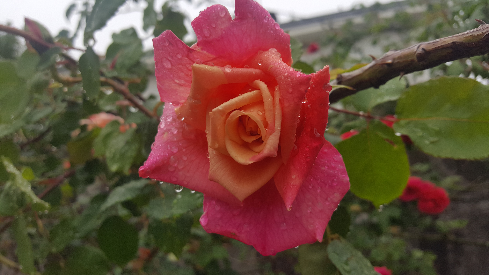

Vy-c

Summary
Education
- Master in Computer Science - Université Paris Sud - FRANCE
- Bachelor in Computer Science - Universität Siegen - GERMANY
Work & Volenteering Experiences
- Teacher of German - Secondary School - Académie de B.
- Custumer Service
- ...
Skills
Languages
- French ⭐️⭐️⭐️⭐️⭐️
- German ⭐️⭐️⭐️⭐️
- English ⭐️⭐️⭐️⭐️
- Spanish ⭐️⭐️
Other